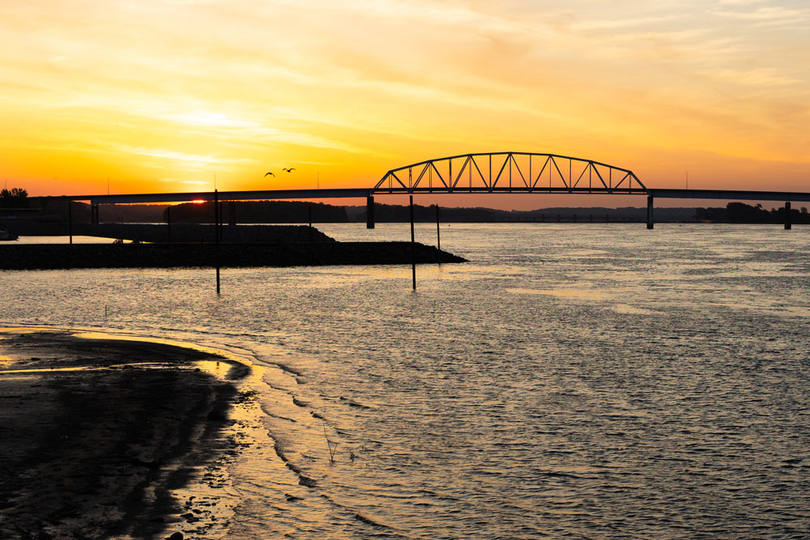
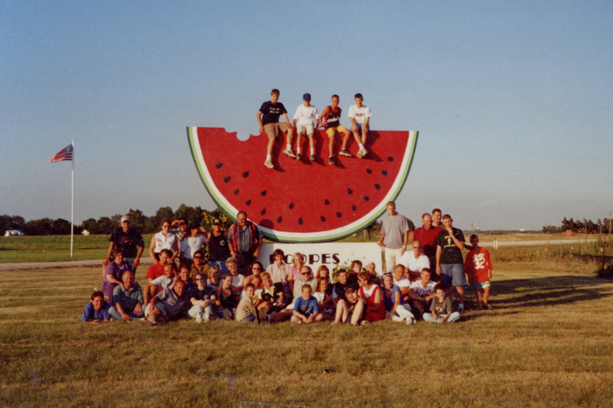
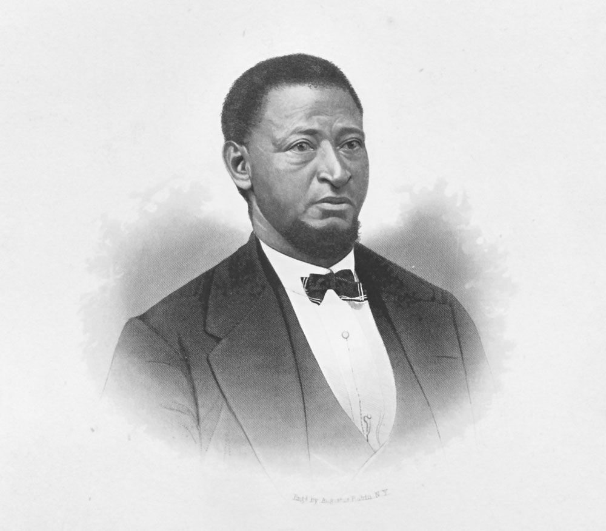
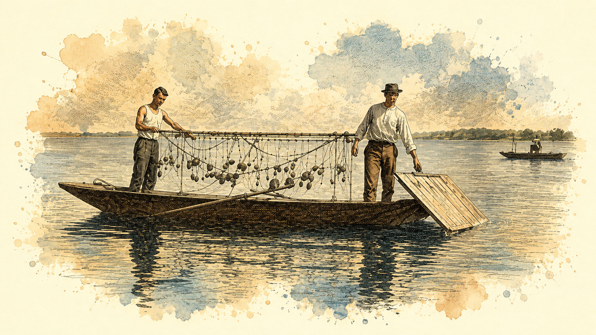

Bridging the Past and Present
An Abridged Multimedia Timeline of Muscatine's History as Told by its Residents

An Abridged Multimedia Timeline of Muscatine's History as Told by its Residents

1830s–1840s
In 1832, a war between the Black Hawk tribe and early settlers led to the Black Hawk Purchase. This treaty with the natives resulted in the eastern part of Iowa being sold to the United States government, opening the first land for settlement in Iowa.
After the Black Hawk Purchase, more settlers started immigrating to Iowa. The first settlement within the present limits of the county of Muscatine was made by Benjamin Nye in 1834; the following year, J. W. Casey settled in the lower part of Bloomington, which would eventually become Muscatine.
Muscatine was founded in 1839 and originally named Bloomington. During that time, Bloomington was a popular name for towns in the Midwest, often leading to mail being misdirected. A name change for the town was first proposed in 1842, but due to much opposition no action was taken. In 1849, the town’s name was finally changed to Muscatine after several citizens signed a petition in support of the change.
1845–Today

When the first white settlers set up their homes in the prairie land of Muscatine County, their main occupation was farming. In 1845, a dam constructed by the Muscatine Company connected Muscatine Island and the mainland. This allowed about 22,000 acres of fertile soil to be reclaimed from swampy land. The land has since been devoted to farming high-quality produce like Muscatine’s famous melons, cantaloupes, and sweet potatoes.
1850s–1900s
From the 1850s until nearly the end of the century, the lumber industry thrived in Muscatine. Close access to the Mississippi River placed Muscatine in an important position in the lumber trade of the nation.
Muscatine businessmen acquired forestland and operated sawmills in various parts of the county. Musser Lumber Co. was one of the pioneer Muscatine lumber firms established in 1855 by Peter and Richard Musser. The Musser family’s mill cut about 11 million feet of lumber each year, promoting the growth of the entire community.
By the end of the 1800s, Muscatine’s lumber industry was in decline. In 1886, a fire destroyed the Muscatine Lumber Co., which was never rebuilt. Additionally, the rising costs of transporting logs by railroad and other economic woes forced local mills to close. Muscatine's lumber industry was practically extinct by 1905.
1854
Distinguished American writer, humorist, journalist, and literary critic, Mark Twain visited Muscatine in 1854. He is considered one of the great figures of American literature.
In Twain's book, “Life on the Mississippi”, he fondly recalls the sunsets in Muscatine, “I remember Muscatine — still more pleasantly — for its summer sunsets. I have never seen any, on either side of the ocean, that equaled them." The Mark Twain Overlook was created in his honor. A bluff near the Iowa-Illinois bridge, once home to Muscatine’s first radio station, offers a view of the riverfront and the beautiful sunsets Mark Twain described.

The view from Mark Twain Overlook of the Norbert F. Beckey Bridge crossing from Iowa to Illinois on Wednesday, May 27, 2026 (Kabedi Mutamba).
1868

Alexander Clark was a black laborer, barber, lawyer, diplomat, and a prominent abolitionist in early Iowa. Originally from Pennsylvania, Clark moved to Muscatine in 1842.
Clark’s most widely recognized achievement was his role in desegregating Iowa public schools. In 1867, Clark filed a lawsuit against the Muscatine school district after they said his 12-year-old daughter, Susan, could not attend school with White Students. The case went all the way to the Iowa Supreme Court, which issued the Clark decision 86 years before the better-known Brown v. Board of Education decision, which ruled segregation unconstitutional nationwide.
The Alexander Clark House is on the U.S. National Register of Historic Places and is preserved and owned by local historian Kent Sissle. Sissle has dedicated several decades of his life to making sure people never forget Alexander Clark.
1890s–1950s

In 1891, John Fred Boepple, a seashell button cutter from Germany, founded Muscatine’s first button manufacturing company, which used freshwater mussel shells that abounded in the Mississippi River.
Emerging during the lumber industry's decline, the button business brought millions of dollars to Muscatine and fueled the city’s growth. By 1905, during the height of button production, 1.5 billion buttons were manufactured per year in Muscatine.
By the mid-1900s, several factors contributed to the decline of Muscatine’s button industry, including overharvesting for mass production that depleted local mussel beds. Additionally, after World War II, industrialization and the rise of durable plastic buttons accelerated the industry’s downfall.
1892–Today
In 1892, Muscatine’s fertile soils were ideal for tomato plantations attracting American food processing company, Heinz. Today, Muscatine's Heinz plant produces a wide variety of sauces and condiments.
The Stanley Family founded several major corporations in Muscatine.
Their engineering consultant firm, Stanley Consultants, was founded in 1913 to help clients worldwide solve complex engineering challenges.
The family also founded HNI in 1947 to create jobs for returning World War II veterans. HNI has grown into a leading provider of workplace furnishings.
The Stanley Center for Peace and Security, founded in 1956, collaborates across countries in progress toward peace.
Kent Worldwide, founded in 1927, is a family-owned company known for its variety of livestock, pet care, food service, healthcare, beverage products, and more.
Carver Pump, founded by Roy J. Carver Sr. and operated in Muscatine since 1941, is recognized for its high-end centrifugal pumps and is a supplier for the U.S. Navy and Air Force.
(Picture of the Stanley Center for Peace and Security) Caption by Natalie on (day of the week) May (day of the month), 2026 (Natalie Jasso).

Carver Pump display seen on the second floor of Muscatine's Pearl Button Museum on Thursday, May 28, 2026 (Sophia Restiffe-Favoretto).
Late 1970s–Today
In the late 1800s, Latino migrant farmers began seeking opportunities in Iowa, working as tomato and sugar beet pickers. These farmers were on contract, often going back and forth between other states, such as Texas, California, Minnesota, and the Dakotas. This migration continued for decades, but it wasn’t until the 1970s that these farmers began to establish roots in Muscatine, working for companies like Heinz and IBP.
Rosa Mendoza and her family were among the Latinos who moved from picking tomatoes as migrant farmers to working in factories in the Muscatine area. As the executive director of the Diversity Service Center of Iowa, Mendoza has watched the Latino community increase substantially since the 70s. It’s a growth that she says supports the strength of the many industries located in Muscatine.
1965–Today
The Muscatine Art Center has been operating since 1965 and is accredited by the American Alliance of Museums. The center serves as a local history museum, contemporary art gallery, and community gathering place. Listed on the National Register of Historic Places, the center also features a Japanese-style garden from the 1930s, an example of the museum's dedication to preserving and sharing Muscatine’s history, art, and culture.
1985–Today
Chinese President Xi Jinping’s special connection to Muscatine, Iowa, began in 1985 when, as a young county official, he visited the town as part of an agricultural delegation. President Jinping formed close bonds with local residents he still calls his “Old Friends.” Decades later, in 2012, Xi Jinping made a personal return visit to Muscatine during an official U.S. diplomatic trip, just before becoming the President of the People's Republic of China. For decades, Muscatine locals have stayed in touch with President Jinping. This relationship has resulted in Muscatine High School students receiving special travel invitations to China in addition to other educational opportunities.

The English transcription of the letter to Sarah Lande from President Xi Jinping, expressing his gratitude and announcing his "50k in 5 years" initiative seen at Sarah Lane's house on (day of the week), May (day of the month), 2026 (Natalie Jasso).
NOW
This timeline highlights Muscatine’s rich and unique history as remembered by its residents, but what do they see for the town’s future?